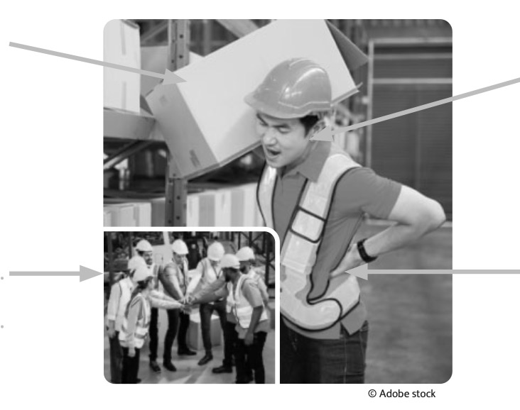

Module C11 : L'analyse d'une situation de travail
Objectif général : être capable d'Appliquer une démarche d’analyse à une situation de travail comportant une activité physique.
Séance 1 : Les composantes d'une situation de travail
Être capable de repérer les composantes d'une situation de travail rencontrée en milieu professionnel.
Yassine, 24 ans, 1,90 m et 90 kg, titulaire d'un CAP opérateur logistique, est embauché en CDI depuis 18 mois comme cariste*-préparateur de commandes sur une plateforme logistique. Son travail consiste à préparer des colis pour différents clients dans un entrepôt de 75 000 m² non chauffé. Une semaine sur quatre, ses horaires sont 05 h-13 h soit 13 h-21 h. Les cadences sont élevées : 80 colis préparés par heure. Dans la majorité des cas, les colis de 5 kg sont portés à mains nues puis mis sur le chariot « préparateur de commandes », ce qui fait que Yassine porte chaque jour presque 3 tonnes de colis. Comme plusieurs de ses collègues, Yassine a eu plusieurs arrêts de travail pour des troubles musculo-squelettiques (lombalgies). Malgré des inconvénients, il est satisfait de son travail. Il apprécie la bonne ambiance de travail qui règne dans l'entrepôt. Les clients recommandent cette entreprise qui a, cette année, obtenu le label « Satisfaction client ».
*cariste : conducteur de chariot de manutention
Réponse attendue :
Le problème ergonomique est : "plusieurs arrêts de travail pour des troubles musculo-squelettiques (lombalgies)"
Un problème ergonomique est un effet négatif du travail sur la santé de l'opérateur. Ici, les lombalgies (douleurs au dos) sont causées par le port répété de charges lourdes (3 tonnes de colis par jour !). C'est un trouble musculo-squelettique (TMS) typique dans le secteur logistique.
Réponses attendues :
- Qui ? Yassine
- Quoi ? Préparer des colis
- Où ? Entrepôt de 75 000 m² non chauffé
- Avec quoi ? Colis de 5 kg / Chariot « préparateur de commandes »
- Comment ? 80 colis par heure
La méthode QQOAC (ou ITAMAMI) permet d'identifier de manière générale les éléments d'une situation de travail : recueil des informations sur l'opérateur, le travail effectué, les moyens et matériels utilisés ainsi que l'environnement de travail. Cette identification générale est la première étape de l'analyse.
L'analyse d'une situation comportant une activité physique est souvent mobilisée pour traiter un problème ergonomique. Cette analyse permet de proposer des mesures destinées à limiter ou éviter les risques d'atteinte à la santé sur le long terme.
Après avoir identifié le problème ergonomique, l'étape suivante consiste à recueillir des informations sur les déterminants et les effets de la situation de travail.
Le recueil d'informations indispensables à l'analyse se fait par observation, questionnement des salariés et/ou consultation des documents de l'entreprise.
ce sont les éléments qui caractérisent l'opérateur (âge, sexe, taille, poids, formation, type de contrat...).
- •
- •
- •
- •
ce sont les éléments qui caractérisent l'entreprise (matériel utilisé ou à disposition, environnement, organisation du travail...).
- •
- •
- •
- •
ce sont les conséquences (positives ou négatives) du travail sur l'opérateur sur le plan physique, de la sécurité, du bien-être...
- •
- •
- •
ce sont les conséquences (positives ou négatives) du travail sur l'entreprise : productivité, qualité, coût, « image » de l'entreprise, absentéisme...
- •
- •
- •
- •
Pour chaque situation de travail, il est possible de différencier le travail prescrit par l'entreprise du travail réel effectué par l'opérateur.
Le travail prescrit, c'est le travail défini par l'entreprise. Il est donné à l'opérateur sous la forme de procédures et de consignes verbales et écrites (ex : livraison de la marchandise à un client).
Le travail réel, c'est le travail tel qu'il se réalise effectivement dans chaque situation. Il correspond à ce qui est concrètement mis en œuvre par l'opérateur.
Le travail réel se décompose en tâches et en activités :
Tâche réelle (ce que l'opérateur fait) : tâche réalisée par l'opérateur en fonction des exigences de chaque situation. Elle se décrit en termes d'actions sur les objets et l'environnement (ex : décharger une palette).
Activité (comment l'opérateur le fait) : description des actions physiques, mentales et sensorielles pour accomplir la tâche réelle. Plusieurs activités sont développées pour mener à bien la tâche réelle (ex : saisir manuellement les colis, calculer le nombre de colis restant).
👆 Complétez directement les champs dans le DOC. 1 ci-dessus.
Déterminants opérateur :
- • Homme de 24 ans
- • CAP opérateur logistique
- • 1,90 m et 90 kg
- • CDI depuis 18 mois
Déterminants entreprise :
- • Entrepôt de 75 000 m² non chauffé
- • 80 colis préparés par heure
- • Colis de 5 kg
- • Chariot préparateur de commandes
Effets sur l'opérateur :
- • Arrêts de travail
- • Lombalgies
- • Satisfait de son travail
Effets sur l'entreprise :
- • Les clients recommandent l'entreprise
- • Arrêts de travail des salariés
- • Label satisfaction client
- • Bonne ambiance de travail
Les déterminants caractérisent l'opérateur ou l'entreprise. Les effets sont les conséquences du travail (positives ou négatives). Cette distinction est essentielle pour analyser une situation de travail et identifier les liens de causalité entre déterminants et effets.

Réponses possibles :
- A (Déterminant Entreprise) : Colis de 5 kg / Chariot / Entrepôt non chauffé / Cadence de 80 colis/h
- B (Déterminant opérateur) : 24 ans / 1,90m et 90kg / CAP opérateur logistique / CDI 18 mois
- C (Effet Entreprise) : Arrêts de travail / Label satisfaction client / Clients recommandent
- D (Effet opérateur) : Lombalgies / Arrêts de travail / Satisfait de son travail
Cette question vous aide à bien distinguer les 4 catégories d'éléments d'une situation de travail. C'est la base de l'analyse ergonomique : identifier ce qui relève de l'opérateur, de l'entreprise, et distinguer les causes (déterminants) des conséquences (effets).
| Situation de travail de Yassine | Travail prescrit | Tâches (Travail réel) |
Activités (Travail réel) |
|---|---|---|---|
| 1. Préparer les colis pour différents clients. | |||
| 2. Réceptionner les bons de commande des clients. | |||
| 3. Vérifier et gérer le niveau de stock des produits sur ordinateur. | |||
| 4. Effectuer une rotation du tronc pour déposer le colis. | |||
| 5. Contrôler la qualité et la quantité des colis. | |||
| 6. Soulever les colis jambes tendues. | |||
| 7. Récupérer les colis au niveau des étagères. | |||
| 8. Se pencher avec le dos rond pour saisir un colis. |
| Situation | Travail prescrit | Tâches | Activités |
|---|---|---|---|
| 1. Préparer les colis | ✓ | ||
| 2. Réceptionner les bons | ✓ | ||
| 3. Vérifier le stock | ✓ | ||
| 4. Rotation du tronc | ✓ | ||
| 5. Contrôler qualité | ✓ | ||
| 6. Soulever jambes tendues | ✓ | ||
| 7. Récupérer les colis | ✓ | ||
| 8. Se pencher dos rond | ✓ |
Travail prescrit = ce que l'entreprise définit de manière globale (ex: "préparer les colis")
Tâche réelle = ce que fait l'opérateur, les objectifs à atteindre (ex: "réceptionner", "vérifier", "récupérer")
Activité = comment l'opérateur le fait, les actions physiques concrètes (ex: "rotation du tronc", "soulever jambes tendues", "se pencher dos rond")
⚠️ Important : Les activités (lignes 4, 6, 8) révèlent des risques de mauvaises postures que le travail prescrit ne mentionne pas !
L'observation du travail réel met en évidence des écarts avec le travail prescrit. Leur analyse permet de déceler des risques professionnels qui seraient passés inaperçus et de proposer des actions préventives adaptées à la situation de travail et à la personne.
Réponse attendue :
Cela permet de déceler des risques professionnels qui seraient passés inaperçus et de proposer des actions préventives adaptées à la situation de travail et à la personne.
Le travail réel révèle ce qui se passe vraiment sur le terrain. Il y a souvent des écarts avec le travail prescrit (ce que l'entreprise a prévu). Ces écarts peuvent cacher des risques.
Exemple avec Yassine : L'entreprise prescrit "préparer des colis", mais en réalité, Yassine se penche avec le dos rond, soulève les colis jambes tendues... Ces mauvaises postures ne sont pas mentionnées dans le travail prescrit, mais elles causent ses lombalgies !
Observer le travail réel permet donc d'identifier ces risques cachés et de mettre en place des mesures de prévention efficaces (formation aux bons gestes, matériel adapté, etc.).